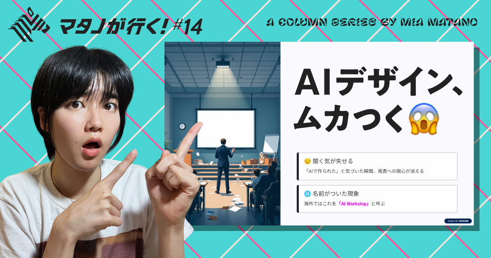
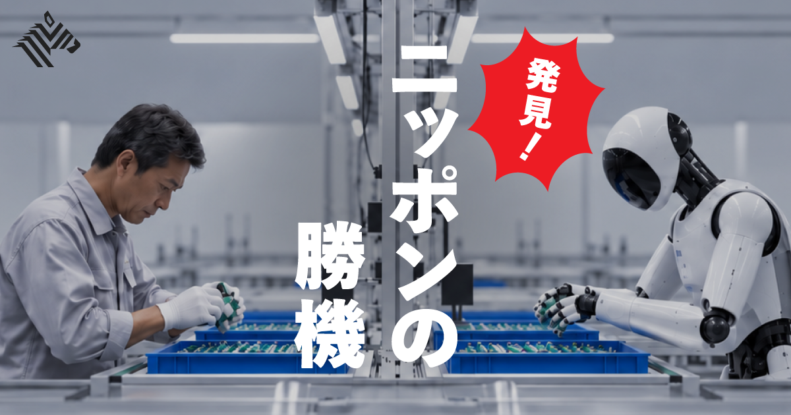
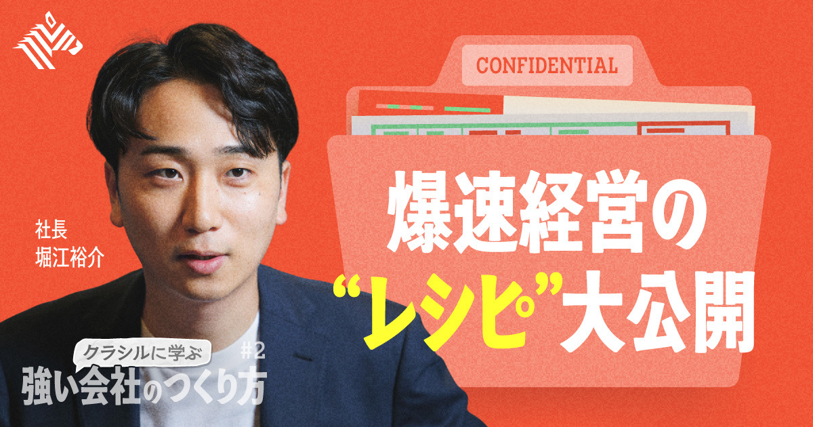
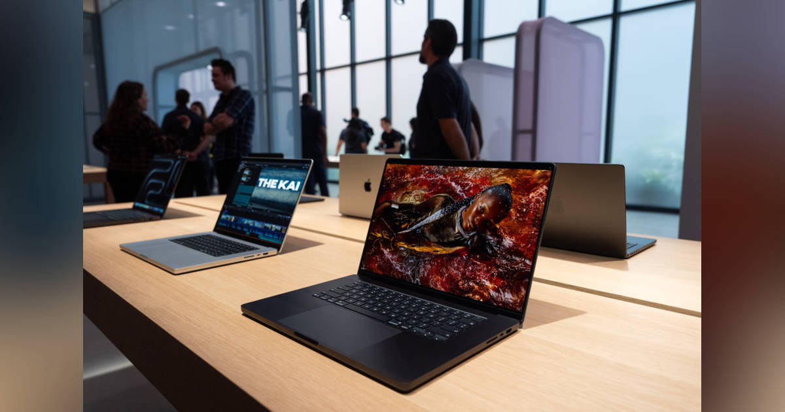

01
【要注意】若者は、大人の安易な「AIスライド」にキレてます
発行日時：2026年9月15日 05:30 JST ・ NewsPicks編集部

あなたに関係ありそうな理由
AIで作業を速くしても、受け手が「誰が何を考えたのか」を追えなければ、説明責任や信頼を損なうことを考える材料になるためです。
概要
記事は、大学のグループ発表で、一見整っているのに中身や話し手の考えが見えないAI生成スライドが増え、聞く意欲まで薄れてしまうという違和感から始まる。著者はAI利用そのものを否定しない。問題にしているのは、生成物をそのまま渡し、何を伝えるかを考え直した形跡が消えることだ。海外ではこうした低品質なAI生成コンテンツを「AI Workslop」と呼ぶ。記事が紹介する調査では、回答者の4割が直近1カ月に受け取り、受け手は1件に平均1時間56分を費やして確認や修正をしていた。作成者の時間短縮が、確認する上司や同僚の負担へ移る構図である。理由の一つは、現在の生成AIが「伝わる順序」より「スライドらしい見た目」を作るのが得意な点にある。聞き手の視線、結論に至る論理、問いへの答えは、人が設計し直さなければ残りにくい。さらに人は作品の完成度だけでなく、どれほど考え抜かれたかも価値として受け取る。だから内容を説明できない資料は、見栄えが良くても信頼を落としやすい。AI広告への反発も同じ論点を含むが、記事は炎上が直ちに売上へ結び付くとは限らず、企業がコスト面から活用を続ける現実も示す。表示コメントでも、違和感の正体はAIではなく、書き手の思考や責任が見えないことだという意見が並んだ。AIを下書きや比較に使うなら、結論、根拠、判断の順序を自分の言葉で戻す工程が必要になる。速く作ることと、受け手が問い返せることを両立できるかが、実務での分かれ目になる。
記事の終盤は、AI広告に対する消費者の反発にも触れる。AIらしい不自然さが見つかればブランドへの好意は傷つき得るが、コスト削減の効果が残る限り、企業は利用を続ける可能性がある。だから受け手は、AI利用の有無だけで判定するのでなく、目的、確認者、修正の責任がどこにあるかを確認したい。発表なら資料作成者が質問に答えられるか、チームなら最終確認を誰か一人へ押し付けていないかが実際の品質指標になる。AIの出力を選び取り、考える工程へ時間を戻せるかを問う記事である。受け取る時間と質問に答える責任まで含めて、AIの効果を測る必要がある。受け手の質問を想定することが、最終確認になる。
仕事や会話で使える一言
「AIで速く作っても、結論と根拠を自分で説明できる形に戻せているかを確認したいですね。」
NewsPicks原文を読む
02
【潜入ルポ】製造大国・中国に挑む「秘密のAIラボ」
発行日時：2026年9月15日 05:30 JST ・ NewsPicks編集部

あなたに関係ありそうな理由
現場の熟練をAIに渡すだけでは競争力にならず、データ化、試作、改善の速度まで設計する必要があると分かるためです。
概要
記事は、ワイヤーハーネス大手の矢崎総業が、中国勢の開発速度と品質向上に危機感を持ち、今年7月に設けたイノベーションハブ「錬」を追う。かつて日本が強かった液晶、太陽光パネル、電池に続き、自動車でも中国メーカーが存在感を増し、記事は中国車が世界販売の約28％を占めるとの見方を紹介する。コストだけでは対抗できず、部品をつくる過程そのものを変えることが課題になった。具体例は試作品づくりで、従来1〜1.5カ月かかった納入までを15日に縮める試みだ。設計データから治具を3Dプリンターでつくり、車種ごとに固定していた治具ボードを組み替えやすくする。試作の速度を上げ、完成車メーカーと仕様をすり合わせる回数を増やす狙いがある。もう一つの軸が、46地域に工場を持ち20万人超を抱える同社の熟練工の暗黙知だ。テープを巻く手や腰の動き、電線の硬さに応じた扱いなどを、映像やセンサーで記録して技能の再現性を高めようとしている。ただし、柔らかく形が変わる電線はロボットに扱いづらく、ワイヤーハーネス工程の自動化率は高くても約60％にとどまる。電子部品の約98％とは隔たりがある。記事は、AIに職人技を一度で写し取らせるより、現場で使い、失敗を返し、データを積み上げることを重視する。表示コメントには、データを取る方式やロボットの骨格への変換には未解決の難しさがあるという指摘と、既存工程を再現するだけでなく製品設計自体を見直すべきだという意見があった。日本の強みを「匠」と呼ぶだけで終えず、データ化の速度と実装の循環へ変えられるかが問われる。
また、記事に登場する「後工程へのおもてなし」は、次の担当者が作業しやすい状態に整える小さな配慮を指す。こうした暗黙知は品質の源泉だが、データ化だけでロボットに渡るわけではない。AI企業と工場側が同じ現場で使い、どの作業なら自動化でき、どこに人が残るかを確かめる必要がある。技術を買う側が実装の専門性を持つことが、部品企業の次の競争力になる。中国の速度を脅威と眺めるだけでなく、自社の工程を変える仮説を速く試せるかが焦点だ。その準備を顧客や協力会社とどの頻度で更新できるかも、競争の一部になる。
仕事や会話で使える一言
「現場知をAIへ渡すなら、記録する技術より、試して戻す改善ループの速さまで見たいです。」
NewsPicks原文を読む
03
【社長直伝】クラシル流「成長が止まらない」組織のつくり方
発行日時：2026年9月15日 05:30 JST ・ NewsPicks編集部

あなたに関係ありそうな理由
失敗を個人の反省で終えず、短い検証と判断基準の共有によって、組織の学習速度へ変える具体例になるためです。
概要
記事は、クラシルを運営するdelyが、レシピ動画、ポイ活アプリ、AI事業へと事業を広げる背景を、創業者の失敗の扱い方から描く。2014年に学生起業した堀江裕介氏は、最初に始めたフードデリバリーを約1年で撤退した。店舗の受発注環境が整っておらず、それを変えるだけの導入メリットや資金も示せなかったためだ。その後にレシピ動画へ転じ、さらにダークストアやミールキットなど複数の新規事業も試してはやめてきた。本人が当たったと感じる確率は4分の1から3分の1ほどで、記事は失敗が多いことを前提に、追い風と十分な市場規模を見極める二つの軸を示す。レシチャレが狙う販売促進費市場は約15兆円とされ、生活者にクーポンとキャッシュバックを渡し、レシートで購買を確かめる。小売やメーカーにとっては、在庫を持たずに販促の効果を追いやすい仕組みだ。クラシルの月間利用者4,000万人と既存の取引関係が、新しい接点の土台になっている。速いPDCAを支えるため、最初から専門家を抱えず、小さく試して1〜2カ月でやめられる組織構造をつくる。日常業務でも期限付きのTo Doを決め、判断基準を約200ページのルールブックへ言語化し、社員の昇格テストにも使うという。新たに始めたサプライチェーン向けAIエージェントでは、消費者の検索やレシートのデータを受発注へ生かす構想も語られる。表示コメントは、成功確率を誤解せず、試行回数と学びを組織に定着させる重要性を強調した。失敗を称賛するだけでなく、撤退できる小ささと次の判断に使える記録を持てるかが、継続的な挑戦を分ける。
レシチャレでは、レシピ動画から得た生活者との接点を、購入後のレシートデータまでつなげる。広告を見たかではなく、対象商品を買ったかを測れるため、販促の費用対効果を説明しやすい。一方、AIエージェント事業は「当たるまでやり続ける」と位置づけられ、既存の検索や購買のシグナルを受発注の改善へ結ぶ構想だ。大きな市場があるだけでは成功しない。既存の顧客、運用の負担、撤退条件をどう置くかまでをセットで設計する姿勢に学びがある。試行の速さと同じだけ、続ける案件を選び直す冷静さも必要になる。
仕事や会話で使える一言
「失敗を増やすより、短い検証でやめる判断と学びを次の仮説へ残せる組織にしたいですね。」
NewsPicks原文を読む
04
無人タクシー、東京で来年運行へ GO、Waymo、日本交通が合意
発行日時：2026年9月15日 09:40 JST ・ ITmedia NEWS
あなたに関係ありそうな理由
自動運転は車両の性能だけで決まらず、許認可、営業所、運行管理といった既存の現場へどう組み込むかが問われるためです。
概要
記事は、Waymo、タクシー配車アプリのGO、日本交通が、東京都内で完全無人の自動運転タクシーを商用化するための提携に合意したと伝える。目標は、レベル4の車両を使った国内初の商用運行を2027年中に始めることだ。利用者は将来、GOとWaymoそれぞれのアプリから呼び出せる想定で、台数は段階的に100台規模へ広げる。開始時期は固定されておらず、安全性の確認と必要な許認可の取得後に決まる。役割分担も明確で、Waymoは自動運転技術、車両管理、運用基盤を提供する。日本交通は東京最大手のタクシー会社として営業所と日々の運行管理を担い、GOは地域のタクシー事業者との連携や全体の設計を受け持つ。3社は2025年から東京7区で公道試験を重ね、現在は日本交通の乗務員が同乗する自動走行を進めている。これは海外の技術を車だけ持ち込むのではなく、日本のタクシー産業の運用に接続する計画だと言える。表示コメントでは、日本はレベル3・4の制度整備を比較的早く進めた一方、狭い道路に歩行者、自転車、車が混在する環境への対応が難しいという指摘があった。事故が起きた場合も、従来の運転者の過失だけでなく、ソフトウェア、メーカー、運行事業者、走行ログの扱いが論点になる。100台は東京の需要全体から見れば小さく、直ちに人手不足を解決する規模ではないという見方もある。それでも、営業所、保守、配車、責任分担を含めた実装を経験できる意味は大きい。自動運転のニュースでは、走行の巧拙だけでなく、どの業務が残り、誰が安全と説明責任を担うのかを追う必要がある。技術が社会の中で使われるまでの設計が、次の拡大速度を左右する。
事故時の責任や走行ログは、導入後に付け足せない土台になる。運転者がいないから運用者もいらないわけではなく、例外時の対応、車両の保守、利用者への説明を担う人と組織が必要だ。試験走行から商用化へ進む間に、東京特有の道路環境でどんな安全基準と記録が整うかを見守りたい。全国展開の前に、100台で得られる運用の学びをどこまで標準化できるかが次の論点になる。利用者が困った時に誰へ連絡できるかも、実用性を左右する。導入の説明を日常業務に組み込めるかも重要だ。
仕事や会話で使える一言
「自動運転の勝負は車両だけでなく、営業所・運行管理・事故時の責任を誰が担うかですね。」
NewsPicks原文を読む
05
アップル新製品ラッシュ－来年上期までにiPadやMacBook刷新､新Siriも
発行日時：2026年9月15日 13:58 JST ・ Bloomberg

あなたに関係ありそうな理由
AI機能の競争が、ソフトウェア単体ではなく、製品の投入順序、価格、既存ユーザーの買い替え判断まで含む競争になると分かるためです。
概要
記事は、AppleがiPhone Duo、iPhone 18 Pro、AirPods 5、新型Apple Watchを出した直後にも、年内から2027年上期まで多くの製品を刷新する計画を伝える。新たな製品戦略はジョン・ターナス新CEOの下で進み、競合に後れを取ったAI分野を巻き返すため、利用者の文脈をより深く理解する「Siri AI」を各製品の前面に置く構想だ。年内には、Siri AI対応チップを載せるHomePod miniとApple TV、顔認識やビデオ会議にも対応するスマートホーム向けディスプレー、タッチスクリーンと有機ELを採用するMacBook Pro、M6チップのMacBook ProとiMac、有機ELのiPad miniが並ぶ。特にスマートホーム用ディスプレーは過去に延期されており、投入時期はなお流動的だ。2027年上期には、M6チップのMacBook Air、A19 Proを使うMacBook Neo、Apple IntelligenceとSiri AIに対応する廉価版iPad、冷却方式を試験するiPad Pro、有機ELのiPad Airなどが予定される。標準モデルのiPhone 18と18eは、秋ではなく春へ発売時期を移す案も示された。さらに年後半には、スマートグラス、カメラ内蔵AirPods、ホームセキュリティー、iPhone発売20周年モデルも計画に含まれるという。もちろん、記事は発売計画が延期や中止になる可能性を明記する。ここで重要なのは、AIを一つのアプリ機能として出すのではなく、家庭、PC、タブレット、スマートフォンの買い替え周期に合わせて広げようとしている点だ。表示コメントでは、標準iPhoneを年末商戦から外す影響、製品群の一貫した体験、部品供給や価格を前提にした購入計画への関心が出ていた。発表会の新機能だけでなく、いつ、どの価格帯の製品でAI体験を広げるのかを見れば、Appleの競争戦略が見えやすくなる。利用者側も、機能の新しさと自分の買い替え時期を分けて考えたい。
新製品の量ではなく、AI対応をどの端末から始め、利用者が無理なく乗り換えられる順序を示せるかが、新体制の評価につながる。
仕事や会話で使える一言
「AI機能の差は、いつ・どの価格帯・どの端末で使えるようにするかまで含めて見たいです。」
NewsPicks原文を読む